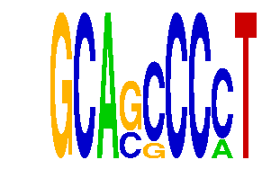

family_11 |
|---|
|  |
| Download PWM |
| Download instances (motifs) |
| Show motif distribution |
Query_ID | Query_Consensus | Subject_Name | Source_DB | Subject_ID | Length | Orientation | Offset | Divergence | Overlap | Subject_Consensus |
|---|---|---|---|---|---|---|---|---|---|---|
| family_11 | GCAGCCCCT | PLAG1 | HOCOMOCO | PLAG1_HUMAN.H10MO.D | 17 | reverse-complement | 4 | 0.724 | 5 | GGGGGCANNNRKAGGGG |
Sequence | Start_position (from start) | Start_position (from end) | Average conservation | Best conservation score | Instance_with_best_CS | Best_Z-score | Instance_with_best_ZS | Strand |
|---|---|---|---|---|---|---|---|---|
| chr11:87823192-87824192 | 522 | 531 | 0.0272222 | 0.066 | GCASSCCCT | 15.031985 | GCASCCCMT | 1 |
| chr11:120101153-120102153 | 764 | 773 | 0.000666667 | 0.002 | GCASSCCCT | 13.183106 | GCASSCCCT | 1 |
| chr4:147374822-147375822 | 517 | 526 | 0.705778 | 0.986 | GCASCCCMT | 15.031985 | GCASCCCMT | 1 |
| chr7:4466899-4467899 | 691 | 700 | 0.00533333 | 0.009 | GCASCCCMT | 13.183106 | GCASSCCCT | 1 |
| chr7:19996118-19997118 | 142 | 151 | 0.759556 | 1 | GCASCCCMT | 15.031985 | GCASCCCMT | 1 |
| chr10:12812465-12813465 | 944 | 953 | 0 | 0 | GCASCCCMT | 13.183106 | GCASSCCCT | 1 |
| chr4:137032204-137033204 | 851 | 860 | 0.130556 | 0.318 | GCASSCCCT | 15.031985 | GCASCCCMT | 1 |
| chr1:137695826-137696826 | 941 | 950 | 0.00944444 | 0.036 | GCASSCCCT | 15.031985 | GCASCCCMT | 1 |
| chr7:19996118-19997118 | 312 | 321 | 0.00944444 | 0.032 | GCASSCCCT | 13.183106 | GCASSCCCT | -1 |
| chr9:72648281-72649281 | 488 | 497 | 0.0362222 | 0.092 | GCASCCCMT | 15.031985 | GCASCCCMT | 1 |
| chr17:5057892-5058892 | 747 | 756 | 0.00666667 | 0.02 | GCASCCCMT | 13.183106 | GCASSCCCT | -1 |
| chr8:97884629-97885629 | 483 | 492 | 0.0584444 | 0.099 | GCASSCCCT | 13.183106 | GCASSCCCT | 1 |
| chr1:174420056-174421056 | 335 | 344 | 0.0852222 | 0.403 | GCASSCCCT | 15.031985 | GCASCCCMT | 1 |
| chr19:44320474-44321474 | 692 | 701 | NA | NA | GCASCCCMT | 15.031985 | GCASCCCMT | 1 |
| chr5:31208244-31209244 | 704 | 713 | 0.991778 | 1 | GCASSCCCT | 15.031985 | GCASCCCMT | 1 |
| chr1:174149318-174150318 | 754 | 763 | 0.918 | 0.998 | GCASSCCCT | 15.031985 | GCASCCCMT | 1 |
| chr4:129472154-129473154 | 713 | 722 | 0.00844444 | 0.021 | GCASCCCMT | 13.183106 | GCASSCCCT | 1 |
| chr4:134842576-134843576 | 172 | 181 | 0.00422222 | 0.012 | GCASCCCMT | 15.031985 | GCASCCCMT | 1 |
| chr4:147374822-147375822 | 401 | 410 | 0.00788889 | 0.017 | GCASSCCCT | 13.183106 | GCASSCCCT | 1 |
| chr9:21903842-21904842 | 834 | 843 | 0.474444 | 0.994 | GCASSCCCT | 15.031985 | GCASCCCMT | -1 |
| chr2:157968845-157969845 | 148 | 157 | 0.00744444 | 0.034 | GCASCCCMT | 13.183106 | GCASSCCCT | 1 |
| chr6:86437151-86438151 | 742 | 751 | 0.0853333 | 0.093 | GCASCCCMT | 15.031985 | GCASCCCMT | 1 |
| chr17:48571335-48572335 | 754 | 763 | 0.857 | 0.993 | GCASSCCCT | 13.183106 | GCASSCCCT | 1 |